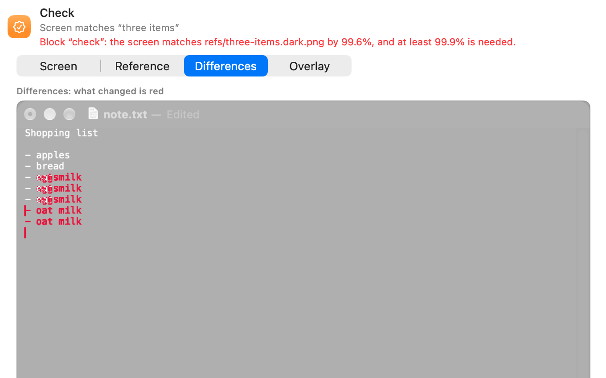

Checks and references
A reference says how the screen should look. JEVision compares the screen with it to pass or fail a check, to finish a waitFor and to choose the way of an if.

What a reference is
A reference is a picture of the window of the app under test, as it should look, plus how to compare the screen with it. In a test file it is an object:
| Field | Required | Value |
|---|---|---|
image | Yes, except for a check by meaning with expect | Path of the picture, relative to the test file, such as refs/inbox.png. |
compare | No | "similar" (default), "exact" or "meaning". See Ways to compare. |
threshold | No | Only with "similar": how much of the picture must match, above 0 and at most 1. Default: 0.95. |
expect | No | Only with "meaning": what the screen should show, in plain words. |
area | No | The part of the window to compare, an area. Default: the whole window. |
ignore | No | List of areas left out of the comparison, such as a clock or a counter. |
hide | No | List of areas that must not appear anywhere: left out of the comparison, covered in every saved screenshot and covered before a screenshot is sent to an AI model. |
Areas are in fractions of the window, from 0 to 1, so they keep fitting when the window is bigger or on a Retina screen. In the app, you draw them on the picture in the reference editor.
The screen and the reference must have the same shape. A window of another size and proportions can't match; a check then fails and a waitFor keeps waiting. Retina and non-Retina pictures of the same window are compared at the smaller size.
Ways to compare
"similar"(default)- A pixel matches when its colour is close to the reference: each of red, green and blue is off by at most 16 of 255. This absorbs font smoothing and small colour differences. The screen matches when the share of matching pixels is at least
threshold, 0.95 by default, that is 95%. "exact"- Every compared pixel must be exactly the same colour. Use it for small areas whose colour matters.
"meaning"- An AI model looks at the screen and decides whether it shows what
expectsays. See Checks by meaning.
{ "image": "refs/message-list.png", "compare": "similar", "threshold": 0.9 }
{ "image": "refs/logo.png", "compare": "exact", "area": { "x": 0, "y": 0, "width": 0.2, "height": 0.1 } }
{ "compare": "meaning", "expect": "The cart shows 2 items" }Compare part of the window, ignore or hide parts
arealimits the comparison to one part of the window, for example only the message list.ignoreleaves out parts that change on their own: clocks, dates, avatars, counters, animations. Without them, such a check fails at random.hideis for private data: passwords, personal details, account numbers. Hidden parts are covered in screenshots before they are saved in a report or sent to an AI model, and are also left out of the comparison.
{
"image": "refs/message-list.png",
"compare": "similar",
"threshold": 0.9,
"ignore": [{ "x": 0.8, "y": 0, "width": 0.2, "height": 0.1 }],
"hide": [{ "x": 0, "y": 0, "width": 0.3, "height": 0.1 }]
}The first run saves the picture
You don't need to take reference pictures by hand. When the picture of a check block doesn't exist yet, the run saves the screen as that picture, with the hidden parts covered, and the report marks the step “Reference saved”. Before that first run, the editor and jevision validate show a warning that the picture isn't saved yet.
A waitFor or if block can't do this, because it has to know what it waits or looks for: a missing picture stops the run at that block.
Dark appearance
An app can look different in dark appearance. When the window of the app under test is drawn dark, JEVision compares it with a dark version of the reference: refs/inbox.png becomes refs/inbox.dark.png, with .dark before the extension.
- A
checkalways uses the dark version in dark appearance. If it doesn't exist yet, the run saves it, just like the first light picture. waitForandifuse the dark version when it exists and the light picture otherwise. When awaitForruns out of time in dark appearance and only the light picture exists, the failure names the dark picture that is missing.
The test file names only the light picture; the dark one sits next to it.
A dark window is never compared with the light picture, so a missing dark picture can't fail a check by itself or pass it unseen. The run saves it and the report marks that step Reference saved: look at it once and keep it, or delete it to take it again.
When the app changed on purpose
If a check fails because the app was redesigned, not because of a bug, open the run's report and accept the screenshot as the new reference. The old picture goes to the Trash, and Edit → Undo brings it back. In git, the change shows up as a changed picture you can compare side by side, under a sliding divider, one over the other or with the differing pixels in red.
One picture is often used by many blocks, in several tests and custom blocks: a check compares with it, a waitFor waits for it, a click looks for it on the screen. Replacing it changes what all of them see, so Accept New Reference is a short guide that goes through them:
- Old, new and differences. Look at the two pictures and what differs.
- Blocks that use this picture. Every test and block that names it, with the dark version counted too. Nothing is changed yet.
- One page per block, with the new picture and the block's areas, hidden parts and similarity drawn over it. Confirm if the settings still fit, Edit Settings to move the areas or change the similarity right there, or Skip to leave the block's settings as they are.
- Summary of what is about to change. Accept as New Reference writes everything, then says, for example, “Updated 3 blocks in 2 tests”.
The new picture and the changed settings are written together: if one test can't be saved, or a test was edited while the guide was open, nothing is replaced. Cancel at any step changes nothing, and Edit → Undo after the end puts back the picture and every setting. A skipped block still compares with the new picture, so the summary warns about it. When only one block uses the picture, the guide is a single step: the two pictures and that block's settings.
The same guide opens when you choose Replace Image in the reference editor for a picture that other blocks use too; it starts at the list of blocks, since you have just chosen the new picture. If only this block uses the picture, it is replaced at once, and Edit → Undo brings the old one back.
A block that looks for the picture on the screen, such as a click or a drag with an image target, has no areas or similarity: it is listed, and from now on it looks for the new picture. The command line has no command to accept a reference.
Checks by meaning
Comparing pixels is sometimes too strict: a list may hold different messages each day, but you only care that it isn't empty. Then describe the screen in words:
{ "type": "check", "reference": { "compare": "meaning", "expect": "The inbox lists at least one message" } }- With
expect, the picture is optional. With a picture as well, the model compares the screen with it. - With a picture and no
expect, the model decides whether the screen means the same as the picture. check,waitForandifall accept a check by meaning.area,ignoreandhidestill apply: only the compared part of the screen is sent, with ignored and hidden parts covered.- The report keeps the provider, the model and its explanation for each check by meaning.
AI models
Checks by meaning use the model chosen in Settings → AI, unless the project or the block names another (see Which AI answers). Without any, JEVision compares pictures only and sends nothing anywhere. Finding an element by its description in words always uses JEV, whichever model checks by meaning.
| Provider | Runs | API key | Id for --provider |
|---|---|---|---|
| Anthropic | In the cloud | ANTHROPIC_API_KEY | anthropic |
| OpenAI | In the cloud | OPENAI_API_KEY | openai |
| Google Gemini | In the cloud | GEMINI_API_KEY | gemini |
| JEV (TypeSafe AI) | In the cloud | TYPESAFE_API_KEY | jev |
| Ollama | On this Mac | None | ollama |
| LM Studio | On this Mac | None | lmstudio |
| OpenAI-compatible server | At the address you give | OPENAI_COMPATIBLE_API_KEY, if the server asks for one | openai-compatible |
- What is sent. For each check by meaning: the compared part of the screen, the reference picture if there is one, and the expected text. For each element a test describes in words: the screenshot of the window and the description, to JEV. Hidden and ignored parts, and password fields, are covered before anything leaves the Mac. Nothing else is sent.
- API keys come from the environment variable in the table or from the Keychain, where Settings → AI saves them. They are never shown, logged or written to reports.
- Only models on this Mac. With this setting on, screenshots never go to a cloud service: a check that would need one, or a block that finds an element by its description, stops with a message.
- Test Connection in Settings asks the model about a small built-in picture, to check the address, key and model in one go.
- On the command line,
--providerand--modelchoose another model than the one in Settings for one run. The project's own choice, if it has one, still comes first. See jevision run.
Which AI answers
There are two jobs: checks by meaning, and writing and failure analysis (the app drafting a test from a description, and explaining why a run failed). For each, the most specific choice wins:
- The block. A check by meaning can name a
providerand amodelof its own. Amodelwithout aprovideris for the provider that is in force. - The project. Settings → AI → AI for this project saves a provider and a model in
jevision.project.json, so everyone who runs the project's tests gets them. A project can choose a different AI for each job; leave it out to follow Settings. JEV can't write tests or explain failures, so it can't be chosen for that job. - Settings → AI on each Mac.
Only the names of the provider and the model are saved in the project. API keys stay in the environment or the Keychain of each Mac, and never reach a test, the project file, a report or git.
- Fallback Provider. When the main provider can't be reached, times out, answers with a server error, is rate limited or has reached its spending limit, JEVision asks the fallback provider you chose in Settings → AI instead, and the report names who answered and why. Problems with the setup, such as a wrong key or an unknown model, are not covered up. A fallback is never used when it is the provider that just failed, and never breaks Only models on this Mac.
- Spending. Every call is written to the spending journal, and counts toward the daily and monthly limits of its provider in Settings → AI: checks by meaning, drafting and failure analysis, and finding an element by its description, which asks JEV. A search that finds nothing costs tokens too and is counted. A provider at its limit stops the check or the search with a message.
- Finding an element by its description always asks JEV: it is the only provider that returns where an element is.
Pictures of buttons and fields
The target of a click and the into of a type also use pictures, but differently: such a picture shows only one element, such as a button, and JEVision looks for it anywhere on the current screen. That's why a click keeps working when the window moves. Recording makes these pictures for you from what you click. When an element has no steady look, describe it in words instead and JEV finds it: see Target.